「BUAA SE Individual Work2」软件案例分析：代码仓库管理系统
Part 0 前言
| 项目 | 内容 |
|---|---|
| 这个作业属于哪个课程 | 2023年北航敏捷软件工程 |
| 这个作业的要求在哪里 | 个人作业-软件案例分析（作业说明链接） |
| 我在这个课程的目标是 | 掌握团队管理和协作能力，学习现代软件工程开发的模式，以工业化水平持续开发高质量软件 |
| 这个作业在哪个具体方面帮助我实现目标 | 通过使用科学的工程化方法实地调研具体的软件，间接学习软工知识，提高自己对于软件特别是高质量软件的认知和理解，学习如何使得自己的软件避免低质量软件或失败软件的问题，并吸取高质量软件或成功软件的经验 |
选题
本作业选题为5. 代码仓库管理系统，对GitHub、gitlab（私有化部署）、gitlink和coding四个产品进行案例分析。
选题理由
这四个产品各具特点：
- GitHub是全球最大开源社区，孕育很多成功的开源项目，在微软接管后近年来也发生了许多新的变化
- gitlab（私有化部署）是面向组织和企业的成熟解决方案，通过部署在私有服务器和私有网络内提供了盈利的商业方案；同时，gitlab本身是海外产品，但国内由极狐代理
- gitlink是CCF主导的开源创新服务平台，平台本身也是开源的
- coding是腾讯云旗下的一站式数字化软件研发工作流解决方案，提供包括代码托管、项目协同、持续部署、持续集成、测试管理等软件开发中的重要功能
以上四个平台在境内/境外，（主要）盈利/非盈利，社区/商业，（平台本身）闭源/开源，提供单一代码托管功能/提供工作流解决方案，社区主导/企业主导/政府组织主导等各有不同，在不同维度上分别具有特色和代表性，适合作为项目案例分析。
同时，作为本次软工团队的PM，我也正好借此机会仔细学习和研究这些平台，为团队选择最佳实践。
Part 1 调研与评测
1.1 软件评测
1.1.1 GitHub
GitHub是一个基于Git实现的在线代码仓库，是目前全球最大的代码托管平台，可以帮助程序员之间互相交流和学习。GitHub不仅是代码托管平台，更是开源社区，有着大量的活跃开发者。
1.1.1.1 基本使用
网站访问方面，仅使用普通国内网络，无法正常访问GitHub或无法加载图片或访问很慢，需要通过修改hosts或使用devside-car等代理软件或使用其他科学上网方法。这是有一定门槛的，特别是对于非开发者的一般用户。
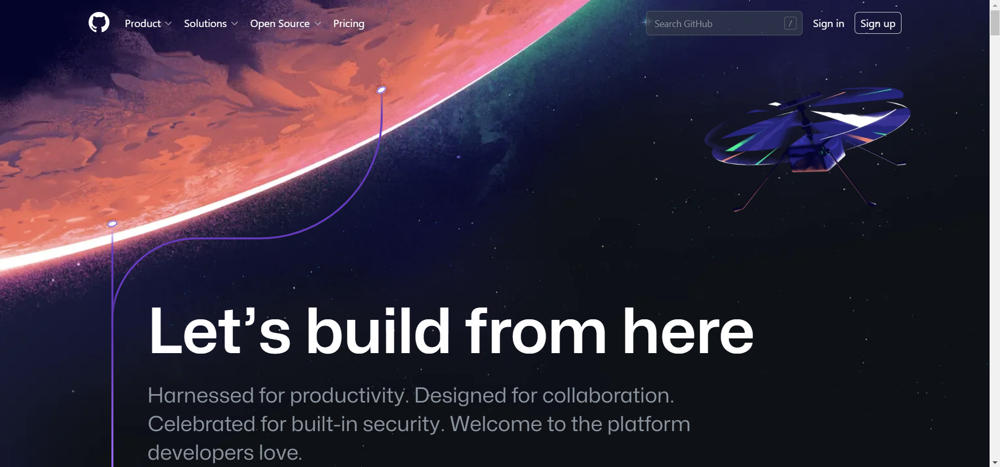
网站注册方面，可以使用邮箱注册，无需手机号，较为方便。
网站首页可以看见最近仓库，following（关注的动态），lasted changes以及上方功能导航栏。最近GitHub还开发了
for you这一新功能的beta版，提供更个性化的推荐。画面整体简洁清晰，没有多余的广告或其他推送内容。但是，GitHub并没有提供中文页面，需要用户有一定的英文能力。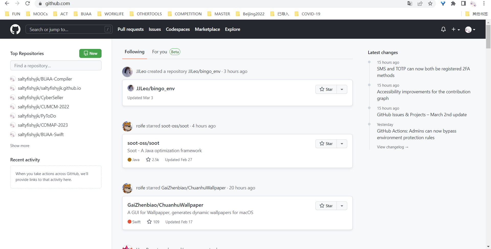
个人页面：可以看到个人信息与简介、pin（置顶）、仓库、项目、star（收藏）、近期贡献与活动等
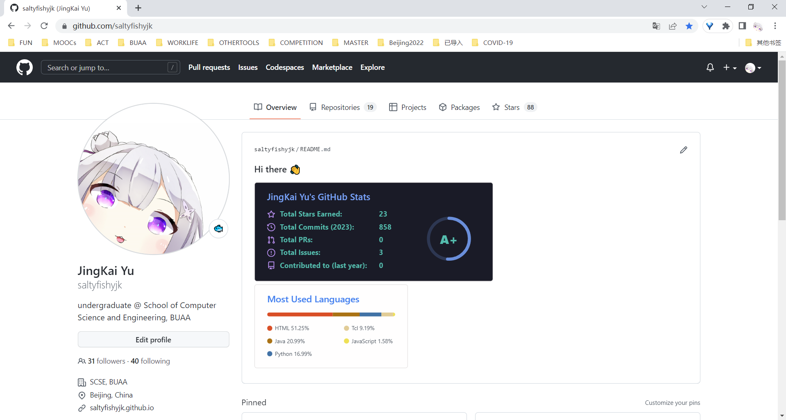
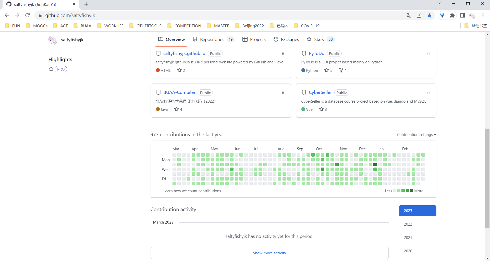
仓库：可以看到仓库的目录、README、LICENSE、About、Releases等信息，快速了解仓库。同时，可以切换branch（分支）、使用git/http clone仓库、使用新功能CodeSpaces这一WebIDE在线开发。同时，可以设置仓库为public或private来控制自己的仓库是否可被外部访问。
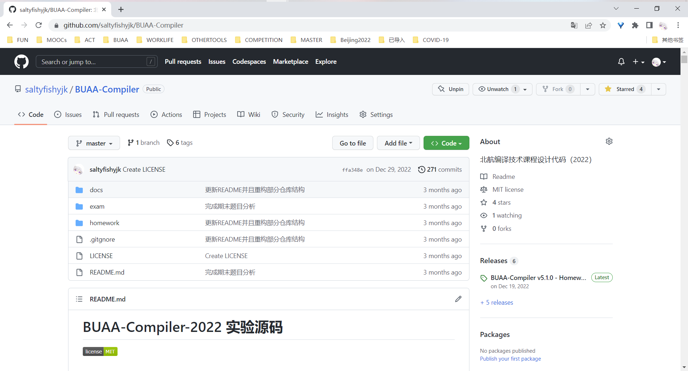
GitHub提供Issues、Pull requests来支持开源社区用户们提出想法/发现bug/提出需求/申请合并开发的某一功能。
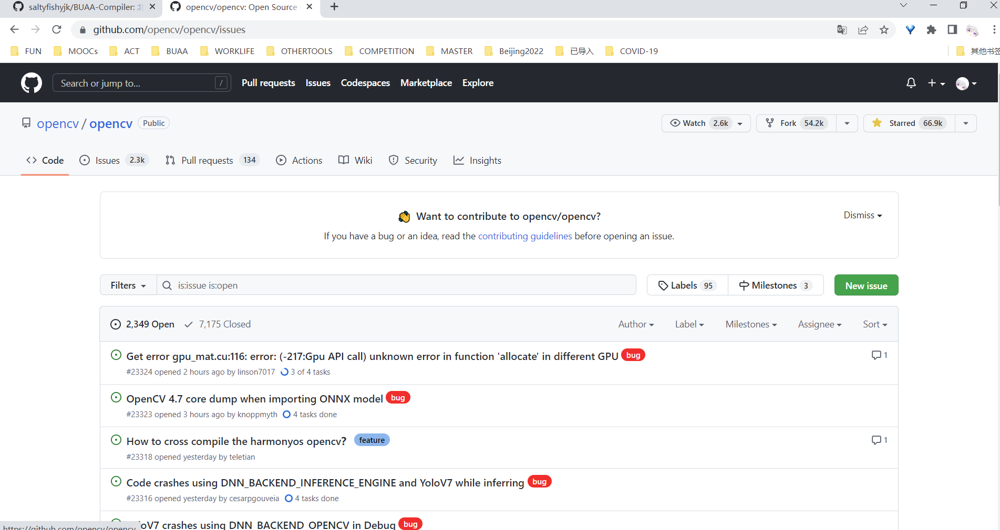
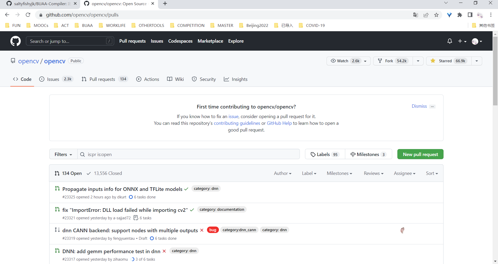
GitHub提供GitHub Actions来支持CI/CD（持续集成、持续部署），为各类开发者都提供了DevOps解决方案
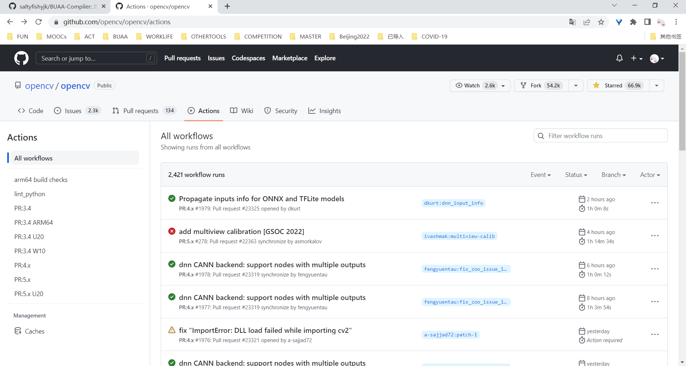
GitHub提供MarketPlace，开放了诸多权限和API，方便开发者向社区贡献高质量app
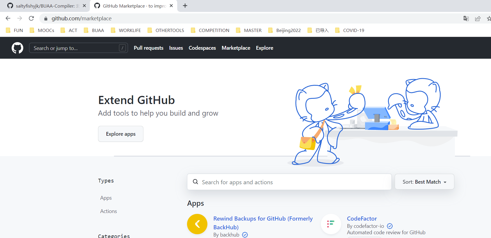
GitHub提供了Explore模块，下有Topics、Trending、Collections等子模块，为这一社区提供了社交平台和技术交流平台
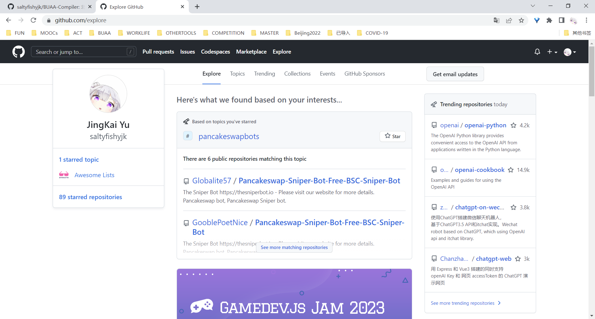
GitHub提供了GitHub Pages，可以在其上部署个人博客或网站等轻量级web应用，笔者在其上依托hexo框架搭建了个人博客：笔者的博客
该服务使用便捷且免费，但同样存在GitHub的通病：访问和部署较慢，经常因为网络错误而部署或访问失败。特别是对于其他普通用户想要访问GitHub Page，困难很大。
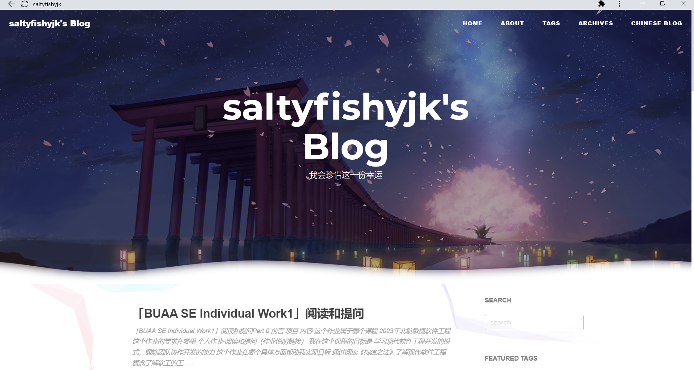
1.1.1.2 软件使用体验
GitHub作为目前全球最大的代码托管平台，在被微软收购后更显专业与强劲，为开发者提供了代码仓库管理、开源软件获取与分享、技术交流等的平台，瞄准用户痛点解决使用需求问题，在数据量、界面、功能和准确度上都是当之无愧的第一代码托管平台，在这一细分领域是绝对的霸主。同时，系统使用稳定，长期使用中没有发现什么bug。
然而，GitHub的最大问题就是在国内访问困难，虽然对于绝大多数开发者而言只是一个小门槛，但是对于更多的非开发者用户，这是一道高高的墙，将他们排除在外。
1.1.1.3 产品改进意见
- 增加国内服务器，提高国内用户访问体验
- 增加中文，提高中文用户使用体验
1.1.1.4 软件评分
| 类别 | 描述 | 评分 （满分 10 分, 良好 6 分, 及格 4 分，聊胜于无 1 分, 很差 -3 分） | |
|---|---|---|---|
| 功能 | 核心功能 | 分析三个核心功能，功能设计和质量。 | 10 |
| 细节 | 有什么为用户考虑的细节? | 9 | |
| 用户体验 | 当用户完成功能时，不干扰用户 (例如: 是否不断弹出不相关广告)。 | 10（无广告） | |
| 辅助功能 | 一些辅助功能如皮肤等 | 10（GitHub风格的代码高亮等，清晰易用） | |
| 差异化功能 | 这个软件独特的功能. 它对用户的吸引力有多大? | 10（是最大的代码开源社区，有最高质量的内容） | |
| 软件的效能 | 占用内存, 启动速度, 内存泄漏情况 | 8（在国内访问不太方便，会出现卡顿等情况） | |
| 体验 | 软件的适应性 | 在联网/断网, 大小屏幕, 没有鼠标的情况下都可以顺畅操作. 和不同平台的软件能流畅协作 | 6（对大陆的网络适配差，但是掌握科学方法后体验良好） |
| 成长性 | 记住用户的选择, 适应用户的特点，用户越用越方便 | 10 | |
| 用户有控制权 | 系统状态有反馈，等待时间要合适。关键操作有确认提示，有明确的错误信息。 让用户方便地从错误中恢复工作, 快捷操作键可调整。 | 9（依旧是网络原因-1分） | |
| 自选 | 自选评分项目 | 用户粘性 | 10（高质量社区、高质量内容和高质量服务非常能够吸引目标客户） |
1.1.1.5 结论
总分：90/100，非常推荐
1.1.2 gitlab（私有化部署）
GitLab的目标客户群体是需要自建代码仓库的企业、学校、政府等组织，它的应用场景是搭建私有或公共的代码仓库，实现代码管理、协作开发、持续集成、持续交付等功能。
笔者作为面向对象设计与构造的助教Leader，拥有OO gitlab私有化部署的管理员权限，在过去的半年中有幸较为全面地体验和使用了这一解决方案。
1.1.2.1 基本使用
网站访问方面，由于部署在校内服务器，所以需要校园网。这很符合我们的需求。同时，由于服务器物理上在校内，所以访问很快，体验很好。
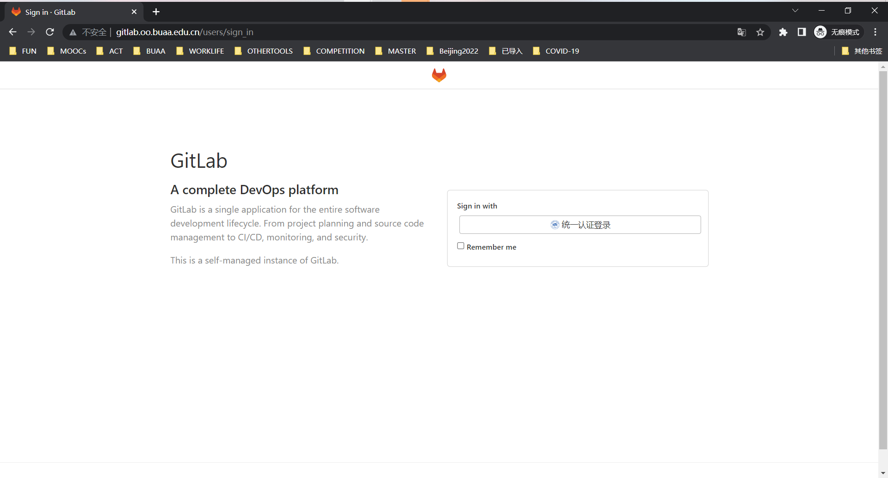
用户登录和注册方面，gitlab支持接入其他认证系统，oo gitlab接入了北航的统一认证系统，安全可靠速度快，同时管理员可以方便地管理用户权限
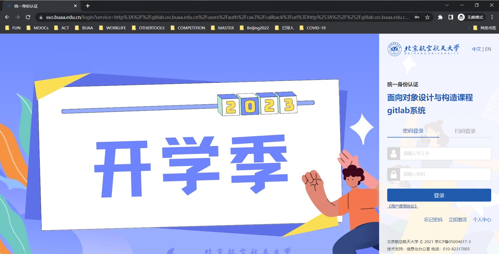
网站首页方面，可以看到项目、群组、里程碑、代码片段、动态以及管理员等栏目，围绕gitlab解决方案的核心，清晰易懂。笔者设置了首页显示群组，可以清晰看到管理的主要群组列表。
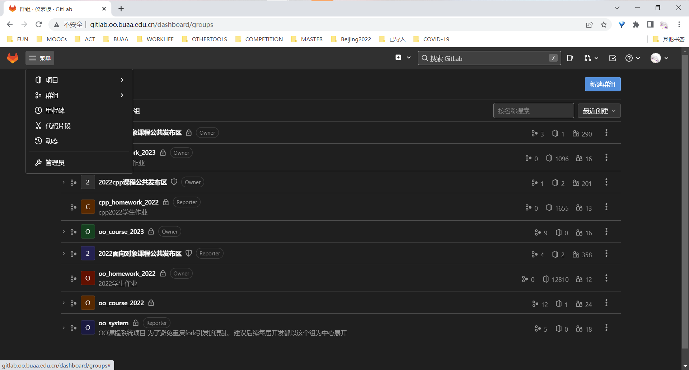
管理员页面，由于GitLab的目标客户群是需要自建代码仓库的企业、学校政府等组织，因此有管理员页面，针对这种私有化部署提供完善的分级权限管理。
由于课程隐私，不展示其中的具体页面，通过文字的形式介绍主要内容。仪表盘可以实时概览最重要数据的直观统计信息，项目、用户和群组可以分别看到组织内的所有内容，并进行最高级别权限的管理，其他还有应用等栏目，囊括了数据分析、API控制、CI/CD管理等。
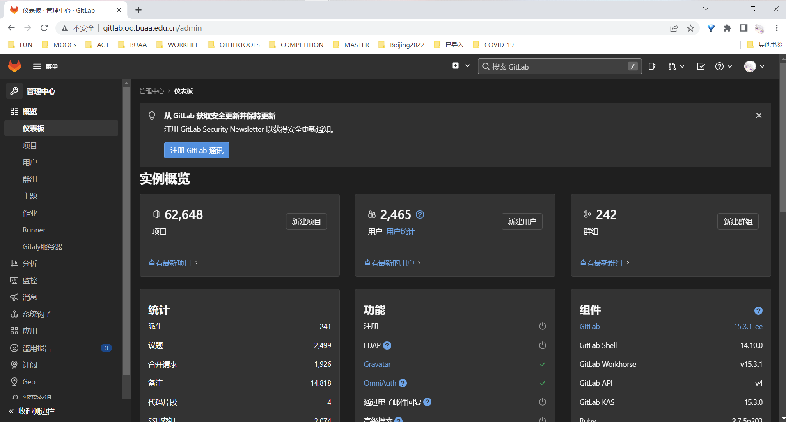
仓库方面，和GitHub类似，可以克隆、管理自己权限范围内的仓库。不过可以明显感觉到，gitlab更私有化，不太具有社交属性，一切围绕组织管理和生产力开展。
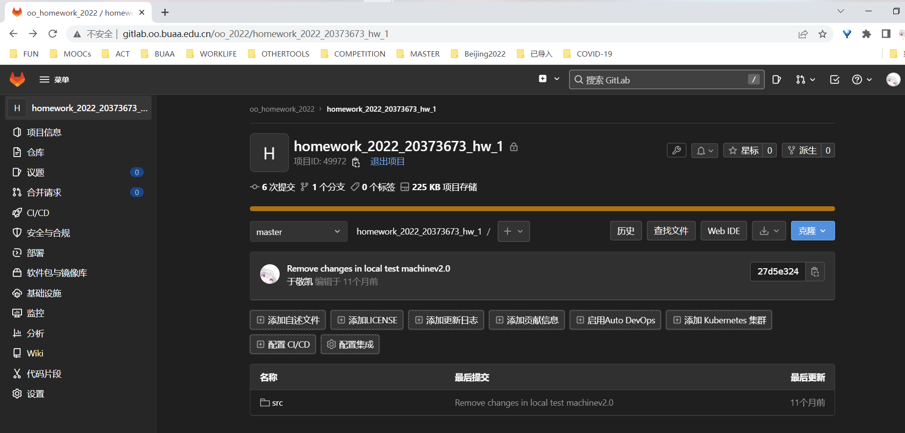
个人页面方面，和GitHub类似，可以查看近期活动、动态、个人信息管理等
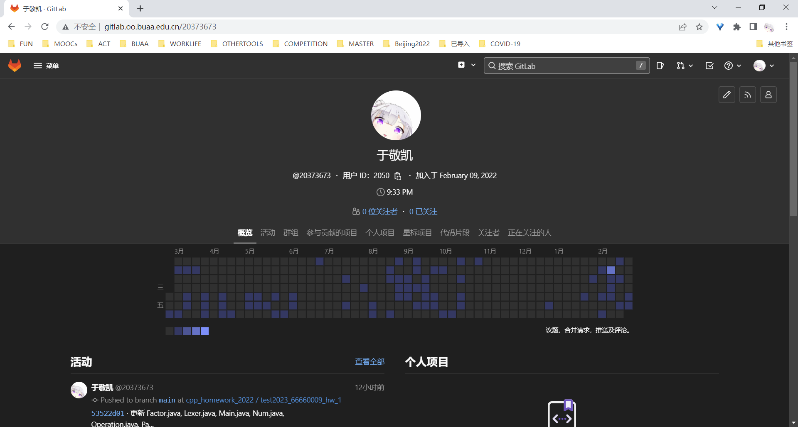
Web IDE方面，gitlab也具有自己的web ide，但是相比于有vscode加持的GitHub而言，功能略显单薄，且只能编辑而无法在测试或生产环境中直接运行。
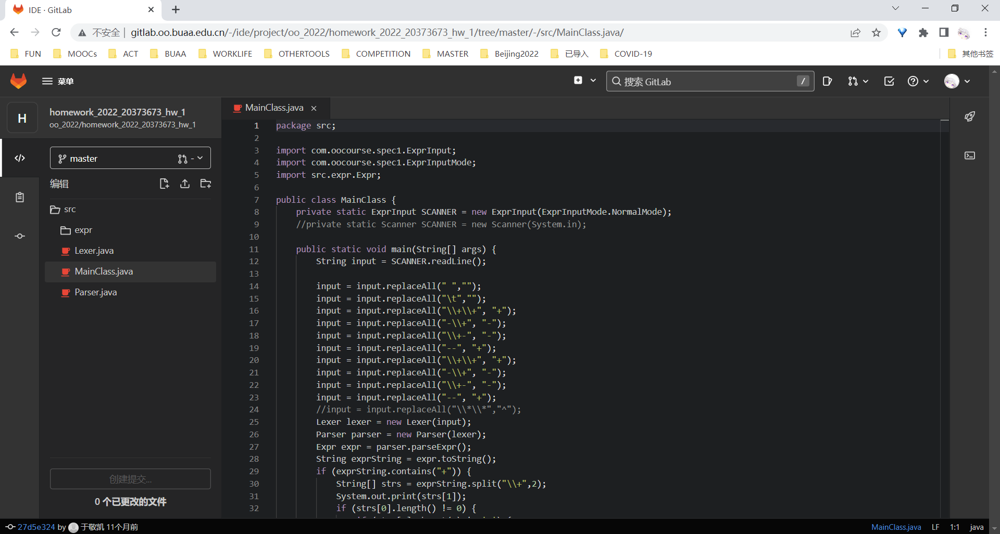
1.1.2.2 软件使用体验
GitLab的目标客户群体是需要自建代码仓库的企业、学校、政府等组织，它的应用场景是搭建私有或公共的代码仓库，实现代码管理、协作开发、持续集成、持续交付等功能。它的运营现状是稳定发展，拥有超过300万用户和1000万仓库，被评为最受欢迎的DevOps工具之一。
在OO课程组的运行中，gitlab非常符合需求：可以私有化部署在自己的服务器上；提供了丰富的API实现客制化；封闭性和安全性极佳；在项目协作、代码管理方面表现优异；提供了多数GitHub的功能，同时去掉了社交属性，让企业等组织可以专注于开发。
1.1.2.3 产品改进意见
- web ide有待提升，目前仅是代码编辑器。
- 首页有待提升，目前可以设置为项目或群组，较为死板，可以提供更多快速浏览的信息。
- 支持更多中文，目前翻译进度是96%
- 减少更新提醒影响。目前OO开课期间对gitlab的稳定性要求高，但是gitlab一直提醒要升级，比较烦人。
1.1.2.4 软件评分
| 类别 | 描述 | 评分 （满分 10 分, 良好 6 分, 及格 4 分，聊胜于无 1 分, 很差 -3 分） | |
|---|---|---|---|
| 功能 | 核心功能 | 分析三个核心功能，功能设计和质量。 | 10 |
| 细节 | 有什么为用户考虑的细节? | 10（管理员模式下可以扮演任意用户，非常方便） | |
| 用户体验 | 当用户完成功能时，不干扰用户 (例如: 是否不断弹出不相关广告)。 | 10（付费软件没有广告） | |
| 辅助功能 | 一些辅助功能如皮肤等 | 9（有较为多彩的颜色和皮肤） | |
| 差异化功能 | 这个软件独特的功能. 它对用户的吸引力有多大? | 10（在私有化部署领域独树一帜，体验良好，为中小企业和组织提供了独立git托管平台的全套解决方案） | |
| 软件的效能 | 占用内存, 启动速度, 内存泄漏情况 | 9（尽管服务器物理部署在校内，但是访问速度有待提升，网页体验有待优化） | |
| 体验 | 软件的适应性 | 在联网/断网, 大小屏幕, 没有鼠标的情况下都可以顺畅操作. 和不同平台的软件能流畅协作 | 9（尽管校内部署使得限制了校园网内访问很优秀，但是外网访问较为繁琐，需要有一定的计算机网络制知识） |
| 成长性 | 记住用户的选择, 适应用户的特点，用户越用越方便 | 9（gitlab升级频率高，快速响应用户们的新需求） | |
| 用户有控制权 | 系统状态有反馈，等待时间要合适。关键操作有确认提示，有明确的错误信息。 让用户方便地从错误中恢复工作, 快捷操作键可调整。 | 9（CI/CD等功能清楚明确） | |
| 自选 | 自选评分项目 | 用户粘性 | 9（使用了gitlab的私有化部署服务后，没有更换产品的欲望，粘性较大） |
1.1.2.5 结论
总分：94/100，非常推荐
1.1.3 gitlink
GitLink是一个专注于中国市场和教育领域的开源创新服务平台，提供了针对中国特色的功能和服务，如CCF认证、国产化部署、中文支持等。GitLink也是本身是开源的，可以自由下载和修改。
1.1.3.1 基本使用
网站访问方面，gitlink作为CCF提供的主要目标客户在国内的代码仓库管理系统，访问速度快
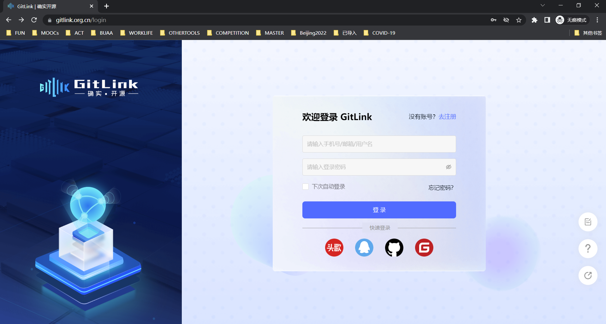
网站注册方面，可以使用qq、GitHub等第三方账号登陆，不过需要绑定手机号
网站首页可以看到大型滚动条目，主要是gitlink近期的宣传内容；上方可以看到开源项目、开源大赛、开源夏令营和教学实践四个栏目，可以发现作为CCF主导的平台，其侧重点和GitHub等有较大区别。
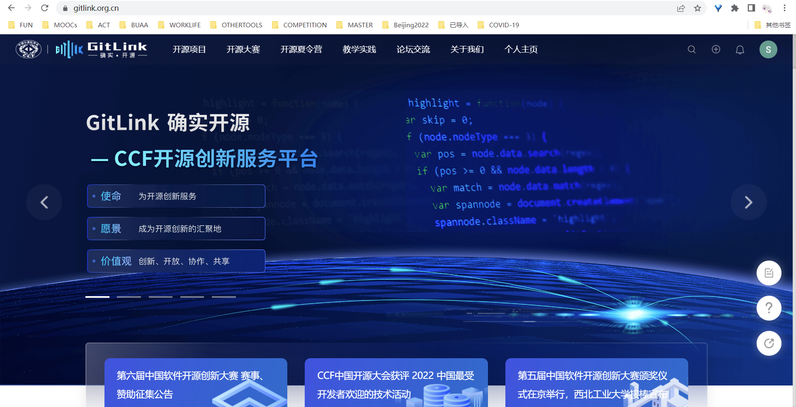
个人页面，与GitHub类似，可以查看数据统计、待办事项、近期活动以及贡献度等，汉化较好
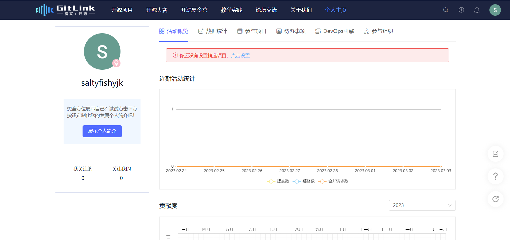
仓库页面，整体结构和GitHub比较相似，特别的，其中Issue被翻译为“疑修”，确实有些信达雅，不过可能开发者们还是会更倾向叫他issue。
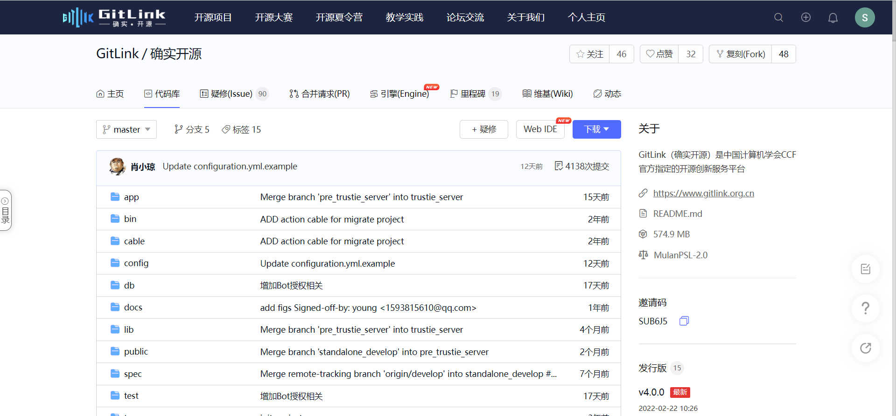
开源项目栏目，可以看到gitlink将项目们分为若干类，点击每一类可以查看对应的项目，这一点做的比较直观新颖，是GitHub没有的功能。
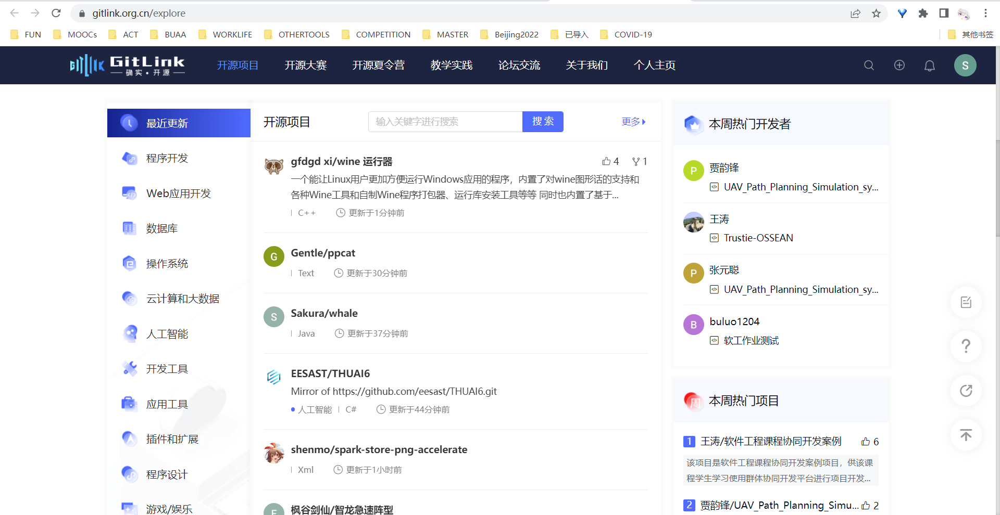
开源大赛栏目，集散了国内的大型软件开源比赛，很有特色和创新性，是GitHub没有的功能。
开源夏令营栏目，是CCF指导下的高校学生暑期编程活动，是开源夏令营相关信息的集散地，含有详情、报名、比赛、规划、辅导等信息。
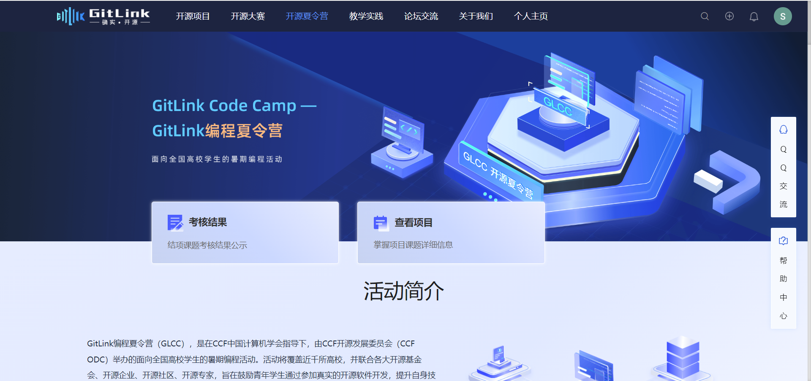
教学实践栏目，包含开设的课程、班级、开源竞赛等信息
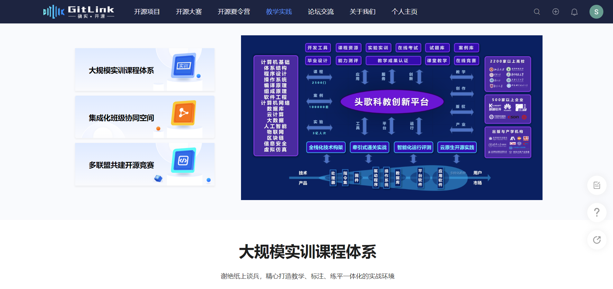
论坛交流栏目，提供了一个论坛服务，关于开源的各种话题
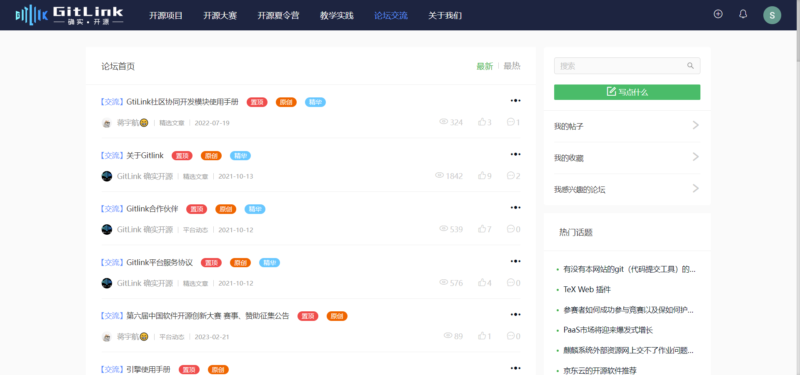
1.1.3.2 软件使用体验
软件整体使用较为流畅，页面具有CCF系列网站的特点，同时融入了不少特色服务，比如开源大赛、开源夏令营、教学实践和论坛交流等栏目，可以看出gitlink并不满足于实现一个类似中国版GitHub的定位，而是试图将和开源相关的内容尽可能融合进来。
整体使用下来最大的感觉就是大而全，在很多特色功能的投入确实令人耳目一新，不过由于生态发展处于初期且用户少，因此整个平台显得比较冷清，开源项目的star寥寥无几，论坛的活跃帖子和用户也很少；不过对于开源夏令营和开源大赛等用户来说，作为功能性网站也比较可用。
与此同时，GitLink存在诸多细小的bug，虽然对使用的影响有限，但是会给人糟糕的印象，具体将会在后续bug分析部分进一步阐述。
1.1.3.3 产品改进意见
- 修复存在的诸多bug。目前GitLink的开源仓库有数十个issues没有修复，修复好这些bug会提升使用体验。、
- 明确自己的定位，究竟是市场产品，还是政府门户，究竟要做什么样的系统和平台。
- 提高产品体验，吸引更多用户。目前平台用户少，没有成熟的生态和足够多的高质量内容，对用户吸引力小。
1.1.3.4 软件评分
| 类别 | 描述 | 评分 （满分 10 分, 良好 6 分, 及格 4 分，聊胜于无 1 分, 很差 -3 分） | |
|---|---|---|---|
| 功能 | 核心功能 | 分析三个核心功能，功能设计和质量。 | 7 |
| 细节 | 有什么为用户考虑的细节? | 8（开源夏令营、开源大赛等较有特色） | |
| 用户体验 | 当用户完成功能时，不干扰用户 (例如: 是否不断弹出不相关广告)。 | 9 | |
| 辅助功能 | 一些辅助功能如皮肤等 | 7 | |
| 差异化功能 | 这个软件独特的功能. 它对用户的吸引力有多大? | 8（开源夏令营等较为新颖） | |
| 软件的效能 | 占用内存, 启动速度, 内存泄漏情况 | 8（尽管是国内网站，但是访问有较明显卡顿） | |
| 体验 | 软件的适应性 | 在联网/断网, 大小屏幕, 没有鼠标的情况下都可以顺畅操作. 和不同平台的软件能流畅协作 | 5 |
| 成长性 | 记住用户的选择, 适应用户的特点，用户越用越方便 | 5 | |
| 用户有控制权 | 系统状态有反馈，等待时间要合适。关键操作有确认提示，有明确的错误信息。 让用户方便地从错误中恢复工作, 快捷操作键可调整。 | 7 | |
| 自选 | 自选评分项目 | 用户粘性 | 6（生态和高质量内容不佳，用户粘性不佳） |
1.1.3.5 结论
总分：70/100，一般
1.1.4 用户调研与采访
1.1.4.1 采访对象的背景
被采访者是北航计算机学院20级学生，为欧阳老师软工班学生。曾使用过GitHub和OO课程的gitlab，有较丰富的个人和团队协作开发经验，每天使用GitHub，对代码仓库管理系统有着较丰富的认识、理解和需求。
1.1.4.2 对代码仓库管理系统的需求
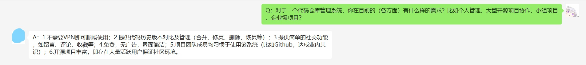
文字
1 | Q：对于一个代码仓库管理系统，你在目前的（各方面）有什么样的需求？比如个人管理、大型开源项目协作、小组项目、企业级项目？ |
1.1.4.3 各个系统对于需求的满足程度；系统之间横向比较的优劣；造成体验不佳的原因
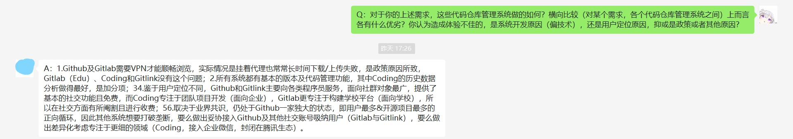
文字
1 | Q：对于你的上述需求，这些代码仓库管理系统做的如何？横向比较（对某个需求，各个代码仓库管理系统之间）上而言各有什么优劣？你认为造成体验不佳的，是系统开发原因（偏技术），还是用户定位原因，抑或是政策或者其他原因？ |
1.1.4.4 各个系统浏览和使用的产品栏目与功能；系统之间横向比较的亮点和困难；初次上手软件的难度；对于非cs专业/cs专业低年级的同学，上手难度如何；对于这些难点，会如何解决，一般人会有搜索和解决这些问题的能力吗
文字
1 | Q：对于这些代码仓库管理系统，你都浏览和使用了哪些产品栏目/功能？他们在横向比较上分别有什么优缺点？他们分别有什么使用上的亮点和困难？对于你现在的技术水平，初次上手这些软件难度如何？如果是一个非cs专业/cs专业低年级的一般同学，上手难度（门槛）又会如何？对于这些难点，你会如何解决，一般人会有搜索和解决这些问题的能力吗？ |
1.1.4.5 从用户角度希望这些系统如何改进；对于这些软件给出评价
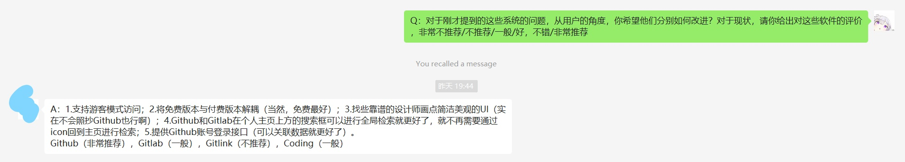
文字
1 | Q：对于刚才提到的这些系统的问题，从用户的角度，你希望他们分别如何改进？对于现状，请你给出对这些软件的评价，非常不推荐/不推荐/一般/好，不错/非常推荐 |
1.2 Bug分析和提交
1.2.1 Bug1：GitLink开源项目页码大于9之后无法跳转和访问
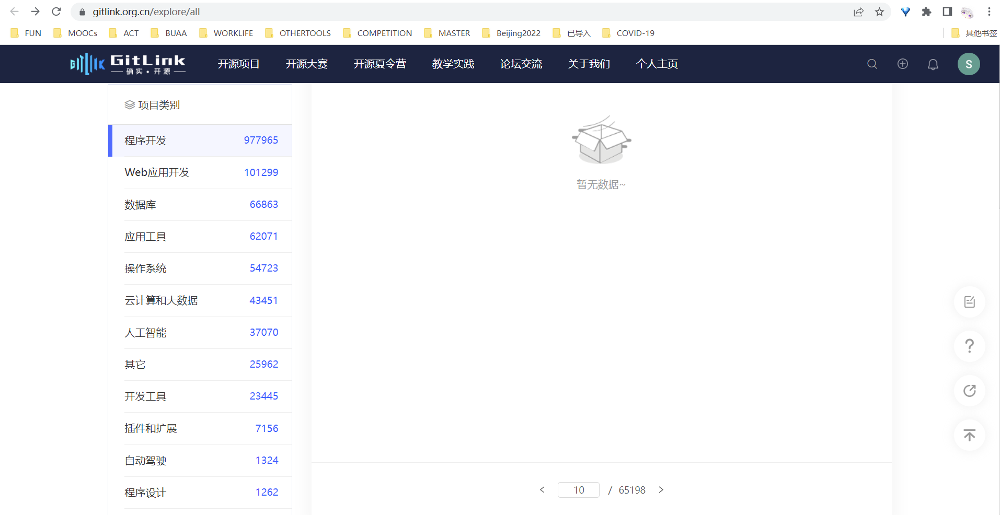
1.2.1.1 测试环境
1.2.1.2 可复现性及复现步骤
1.2.1.3 Bug具体情况描述
1.2.1.4 Bug分析
1.2.1.5 Bug改进建议
1.2.1.6 Bug反馈
1.2.2 Bug2：GitLink个人展示页面跳转
1.2.3 Bug3：GitLink论坛交流栏目点击点赞和评论按钮没有反应

This is copyright.